符合真实效果的动画风格
图形源于真实物体效果，并进行适度的动画风格提炼；避免纯粹抽象符号，在保持辨识度的同时呈现出特有的风格表达。
系统图标用于统一功能表达、状态反馈和跨设备识别，确保不同尺寸与表现形式下保持清晰一致。
网格采用 24 × 24 的相对比例，不绑定 pt、dp 或 mm，以基础单位 a 描述全部构造关系。
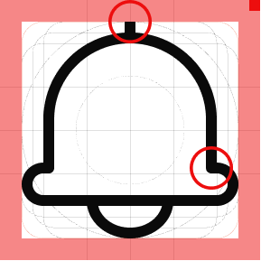
所有图标优先以正方形网格制作；仅当图形无法完整传达含义时，根据实际情况使用垂直、水平、圆形和特殊网格。
四周保留 2a 安全区域，主体轮廓不得侵入，以保证小尺寸下的识别度。
标准描边为 1a，端点齐平、转角与相交位置保持使用圆角转折，整体保证协调的视觉重量。
2a 作为圆角单位使用，在特殊情况时可应用偶数倍的 2a 圆角在转折处。
根据主体形态和比例选择标准、圆形、垂直、水平或特殊网格，并统一处理复合语义。
标准
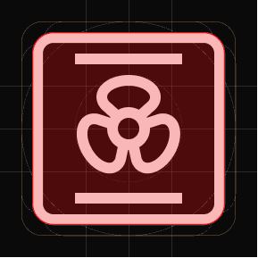
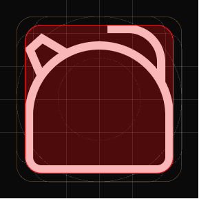
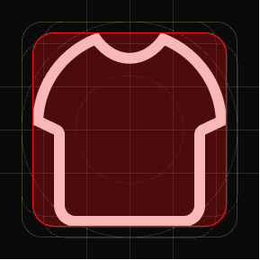
圆形
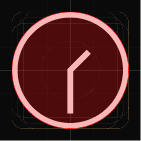
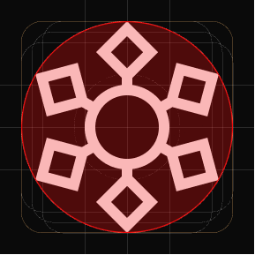
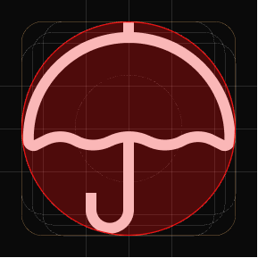
垂直
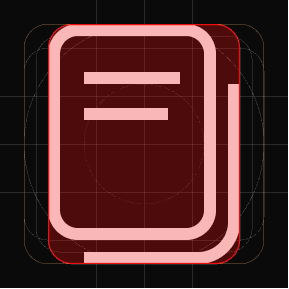
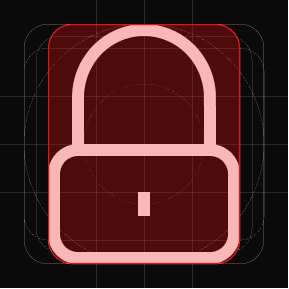
水平
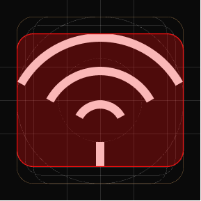
特殊
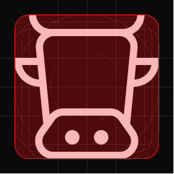
常规情况下辅助符号建议为主符号尺寸的 1/4，默认位于右下角；其面积不得超过主符号的一半，也不得遮挡主体识别特征。特殊情况可根据具体字符宽度适当加宽，但高度不能长过整体的一半。
右下角辅助符号
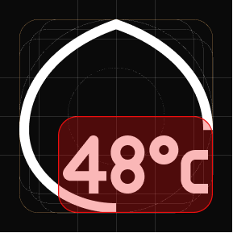
图标在不同场景下应保持清晰的识别度，根据不同载体、使用层级选择对应尺寸，避免因缩放导致线条粘连或细节丢失。
| 载体 | 最小（网格尺寸） | 常规（网格尺寸） | 最大（网格尺寸） |
|---|---|---|---|
| TFT | 16dp | 48dp | 96dp |
| LED | 5.5mm | 17mm | 34mm |
默认使用展示图标配色，也可根据实际功能和具体语义进行颜色更改，但需使用色彩库内辅助色（基础-色彩）来搭配，整体色彩搭配协调美观。
示例
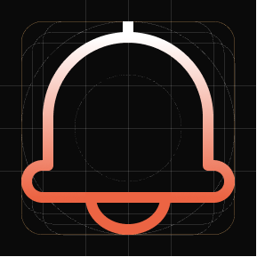
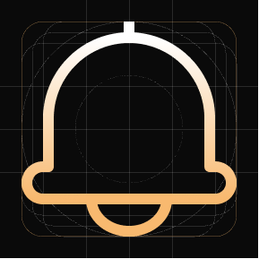
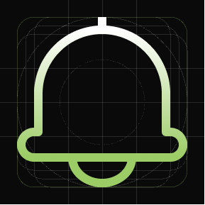
默认使用展示图标配色，也可根据实际功能和具体语义进行颜色更改，但需使用色彩库内辅助色（基础-色彩）来搭配，整体色彩搭配协调美观。
示例
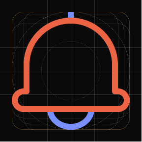
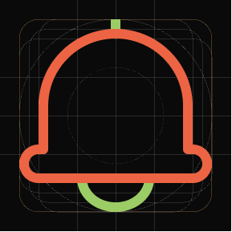
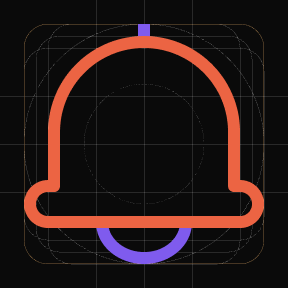
默认使用展示图标配色，也可根据实际功能和具体语义进行颜色更改，但需使用色彩库内辅助色（基础-色彩）来搭配，整体色彩搭配协调美观。
默认使用展示图标配色，也可根据实际功能和具体语义进行颜色更改，但需使用色彩库内辅助色（基础-色彩）来搭配，整体色彩搭配协调美观。
示例
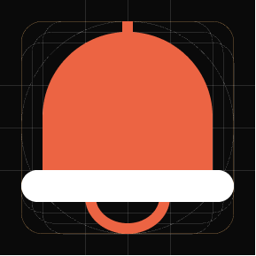
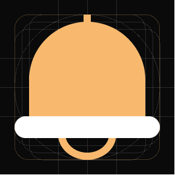
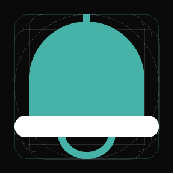
默认使用展示图标配色，也可根据实际功能和具体语义进行颜色更改，但需使用色彩库内辅助色（基础-色彩）来搭配，整体色彩搭配协调美观。
示例
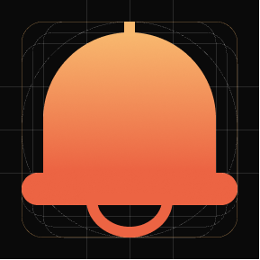
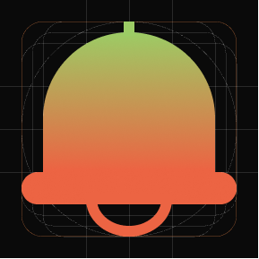
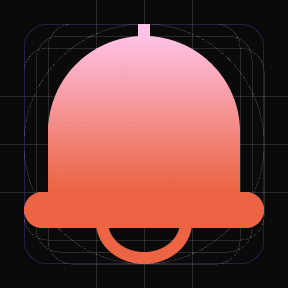
默认使用展示图标配色，也可根据实际功能和具体语义进行颜色更改，但需使用色彩库内辅助色（基础-色彩）来搭配，整体色彩搭配协调美观。
彩色图标以真实物体为基础，通过统一光影、克制色彩和品牌化造型建立清晰且一致的视觉语言。
图形源于真实物体效果，并进行适度的动画风格提炼；避免纯粹抽象符号，在保持辨识度的同时呈现出特有的风格表达。
所有图标处于统一的光源环境，以一致的光影方向塑造体积感，并建立品牌视觉世界的秩序与真实性。
色彩服务于品牌，通过标准色板传达层次与情感，确保整体和谐并保持品牌独特性。
以活力与简约为核心：光影过渡柔和、造型圆润、色彩明快，传递亲和而有活力的体验。
核心彩色图标以 256 × 256pt 为基准尺寸，并在同一品类中保持统一朝向、角标位置和光影条件。
| 规范维度 | 基准值 | 应用说明 |
|---|---|---|
| 画布与尺寸 | 256 × 256pt | 主体居中并保留稳定安全区 |
| 图形视角 | 四分之三向右视角 | 同一品类使用一致视角，避免其他角度透视效果 |
| 光线与色温 | 右侧柔光 / 中性光 | 高光柔和、明暗自然过渡，避免死黑 |
| 阴影与倒影 | 低强度 / 无倒影 | 阴影仅用于建立体积，不制造悬浮感 |
| 辅助角标 | 右下角 | 位置与比例统一，不遮挡主体识别特征 |
统一采用右侧定向柔光，通过柔和过渡控制不同设计人员或 AI 输出的体积感保持一致。
高光位于物体右侧中上半部分，形态柔和；中间调保持物体固有色。
明暗交界线应自然过渡，反射光可弱化或忽略。
Leader彩色图标的光影对比度约为 30%，阴影以柔光为主，避免死黑。
Leader使用具有透视角度镜头传达清晰、活力的感受，同一品类应保持相同角度的合理透视。
核心视角为四分之三右侧或四分之三俯视视角：主体与空间关系合理，避免明显透视错误。
光影结合透视；同一品类必须采用一致视角。
以成对示例说明推荐做法与禁止做法；对比光影、造型、色彩和透视，快速判断彩色图标是否符合品牌标准。

使用右侧柔和中性光，阴影保持通透。

不要使用过强对比或死黑阴影。
保持圆润造型、明快的色彩与统一材质语言。
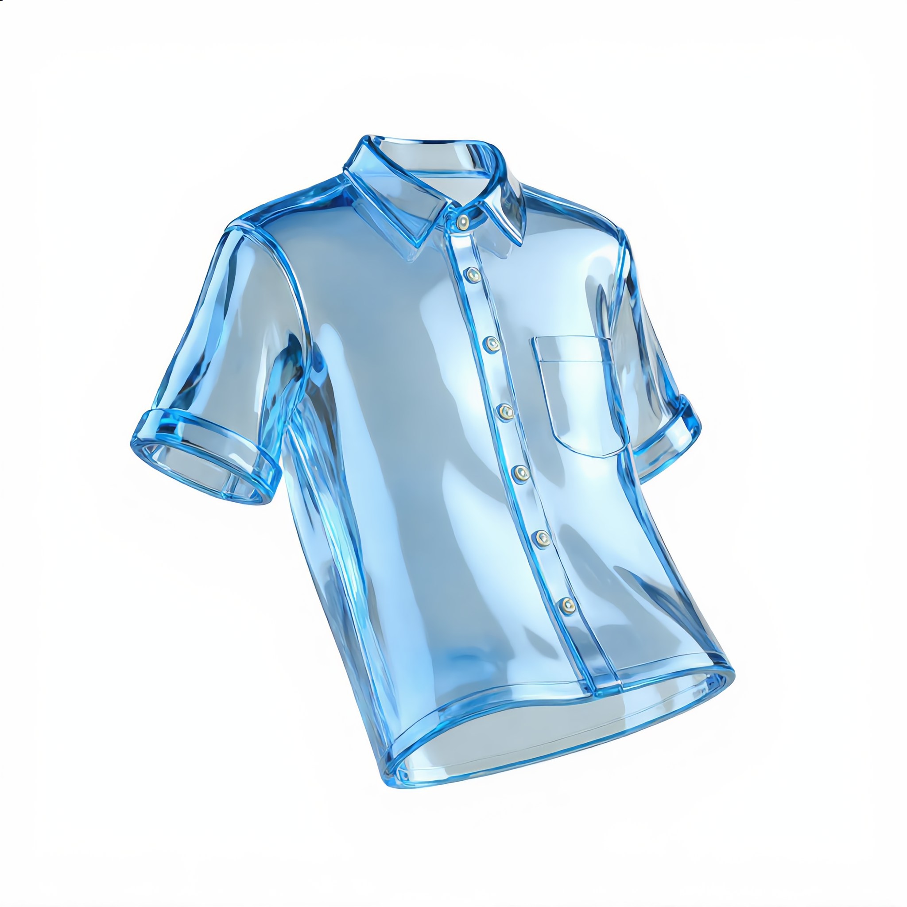

不要混用不同风格或制造不真实的材质。
使用明快活力的色彩为主色，可有小面积点缀色辅助。

不要使用过高饱和度或互相争抢的颜色。
四分之三右侧视角，同一品类采用一致视角。


不要使用夸张透视或在同组中切换视角。